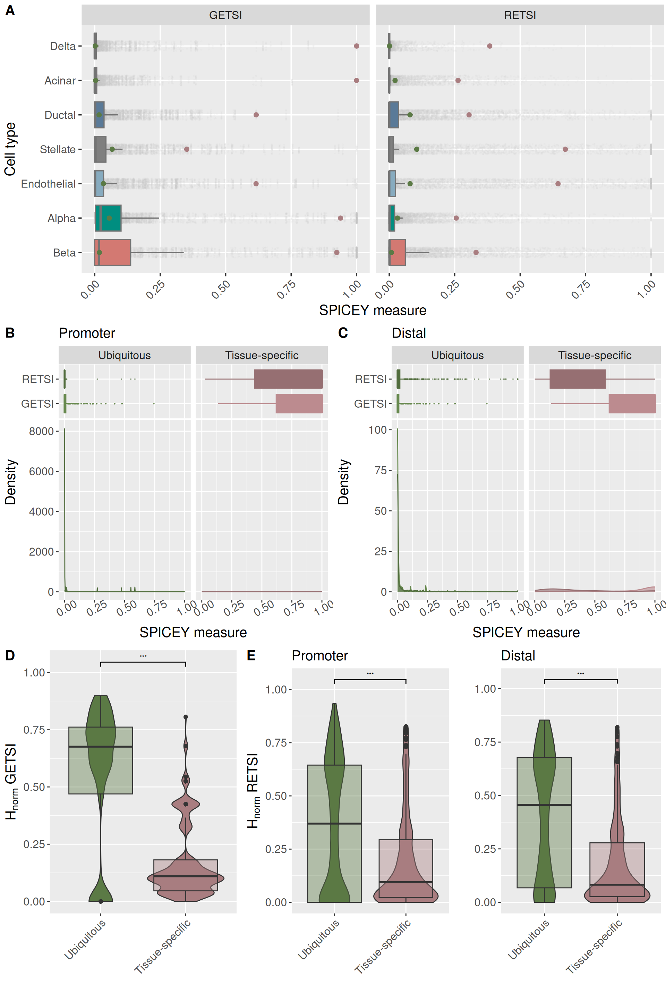
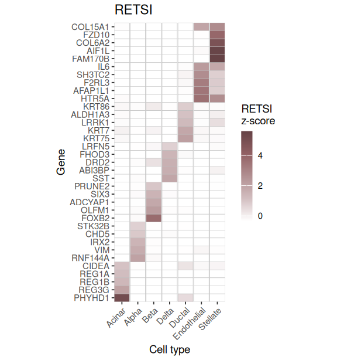

SPICEY: An R package for assessing tissue specificity from single cell multi-omics data
Georgina Fuentes-Páez 1
@Pasquali_Lab
georgina.fuentes@upf.edu
Nacho Molina2 Mireia Ramos-Rodríguez1 Lorenzo Pasquali1
1 Endocrine Regulatory Genomics, Department of Experimental & Health Sciences, University Pompeu Fabra, 08003, Barcelona, Spain.
2 Institut de génétique et de biologie moléculaire et cellulaire (IGBMC), University of Strasbourg, 67404, Illkirch, France
Overview
SPICEY (SPecificity Index for Coding and Epigenetic activitY) is an R package designed to quantify cell-type specificity across single cell multi-omic data.
Methods
Cell type specificity indices
- RETSI (Regulatory Element Tissue Specificity Index): quantifies cell-type specificity of regulatory regions across cell types.
- GETSI (Gene Expression Tissue Specificity Index): measures cell-type specificity of gene expression patterns across cell types.
Both are calculated using a weighted specificity score for each feature (regulatory region or gene), reflecting the level of enrichment in each cell type, as follows:
\[ TSI_{i,x} = \frac{FC_{i,x}}{\max(FC)_x} \cdot w_{i,x} \]
\[ w_{i,x} = \text{rescale}\left( -\log_{10}(padj_{i,x}),\ [0, 1] \right) \]
where:
- \(i\) = cell type
- \(x \in \{r, g\}\), with \(r\) for regulatory region (RETSI) and \(g\) for gene (GETSI)
- \(\text{FC}_{i,x}\) = log fold-change of feature \(x\) in cell type \(i\)
To facilitate the construction of cell-type specific regulatory networks, SPICEY associates regulatory elements with their likely target genes by either:
- Nearest-gene assignment: based on proximity to the closest transcription start site (TSS).
- Co-accessibility-based linking: leveraging co-accessible links in chromatin accessibility (e.g., via Cicero).
Entropy-based Specificity Indices
SPICEY alternatively uses an entropy-based approach to measure the distributional skewness of feature activity across cell types, as follows:
\[ H = - \sum_{i=1}^{N} p_i \log_2(p_i) \]
\[ H_{norm} = 1 - e^{H} \] where:
- \(i\) = cell type
- \(p_{i,x} = \frac{a_{i,x}}{\sum_{j=1}^{N} a_{j,x}}\) = activity or expression of feature \(x\) across \(N\) cell types
- \(H_norm\) = normalized shannon entropy [0,1].
Feature activity or expression is normalized across cell types to follow a probability distribution; low entropy means specific to few cell types, high entropy means spread out evenly.
Results
SPICEY was applied to single-nucleus ATAC-seq and RNA-seq data from 5 non-diabetic human pancreatic islets from the Human Pancreas Analysis Program (HPAP) (@ref) (Figure 1) to quantify cell-type specificity, and co-accessibility links were used to assign distal regulatory elements to genes. Distribution values of the SPICEY scores revealed distinct specificity patterns across cell types (Figure 2), reflecting heterogeneous regulatory and transcriptional landscapes within the pancreatic islets.
Figure 1: Joint UMAP visualization of cell types in human pancreatic tissue derived from single-cell data. The UMAP uses weighted nearest neighbor (WNN) integration of RNA and chromatin accessibility (ATAC) profiles from a subset of 5 non-diabetic HPAP donors with comparable cell numbers and cell type distributions. Each point represents a nucleus and is colored by predicted cell type.
SPICEY scores for promoters and enhancers linked to known ubiquitous and tissue-specific genes showed that tissue-specific sites have significantly higher specificity, indicating that cell-type-specific gene expression aligns with cell-specific regulatory activity. This demonstrates SPICEY’s ability to capture regulatory and transcriptional specificity in human pancreatic islets (Figure 2).
Additionally, entropy measures revealed that ubiquitous sites had higher entropy, indicating broad activity across cell types while tissue-specific sites showed significantly lower entropy (p < 0.001), reflecting more restricted cell-type-specific activity (Figure 2). This demonstrates that SPICEY’s entropy metric reliably captures cell-type specificity.

Figure 2: SPICEY scores capture cell-type-specific regulatory patterns. (A) SPICEY score distributions highlight higher specificity in tissue-specific genes/elements (brown) compared to ubiquitous ones (green). (B–C) Promoter and distal regions show significantly elevated SPICEY scores for tissue-specific genes. (D–E) Entropy analyses reveal lower entropy for tissue-specific features, confirming stronger cell-type restriction, especially in RETSI scores stratified by region.
In endocrine cells, SPICEY identified key known markers like INS and IGF2 (beta), SST (delta), and IRX1/IRX2 (alpha), along with less common ones like ADCYAP1 and SIX” (beta) and LRFN5 (delta). Although GCG wasn’t top-ranked in alpha cells, its high raw specificity supported its relevance. In non-endocrine cells, SPICEY recovered established markers REG1A/B (acinar), PI3 and KRT family (ductal) and COL6A1 (stellate) and highlighted novel candidates like GIMAP genes in endothelial cells (Figure ??).

Figure 3: Heatmap of top cell-type-specific genes based on SPICEY scores. This heatmap shows the top 5 genes per cell type ranked by RETSI and GETSI z-scores. Each row is a gene, and each column represents a different cell type. Darker colors indicate higher specificity, meaning stronger chromatin accessibility or gene expression unique to that cell type.
Conclusions
SPICEY is an R package for quantifying cell-type specificity from single-cell multi-omic data. It combines differential analysis with entropy-based scoring through two integrated metrics.
Detects both known and novel markers in well-defined and less-characterized endocrine and non-endocrine cell types, and distinguishes tissue-specific from broadly active features.
By leveraging co-accessibility to link distal regulatory elements to target genes, SPICEY facilitates the identification of coordinated regulatory programs.
SPICEY provides a versatile framework for integrating single-cell multi-omic data, ideal for studying regulatory specificity in complex tissues using common single-cell analysis pipelines.